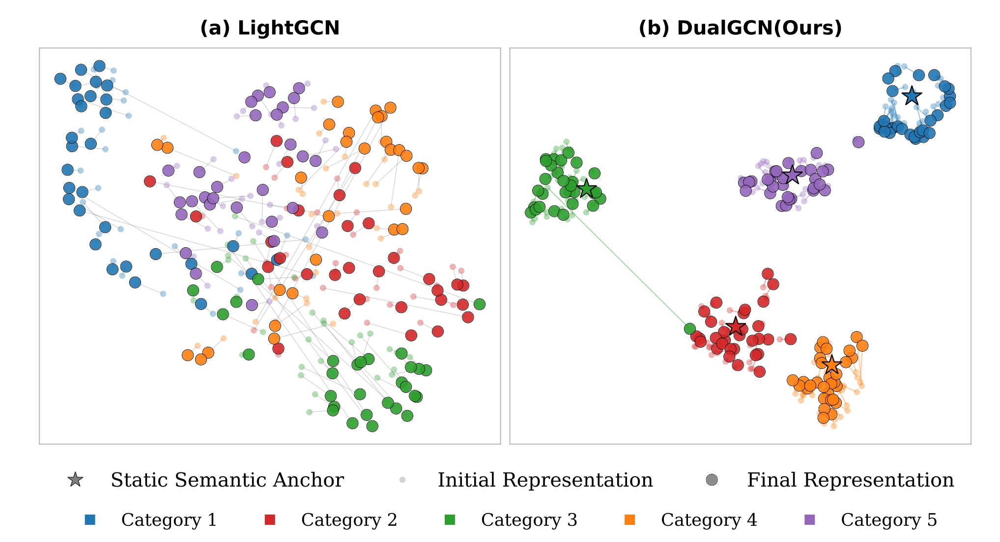
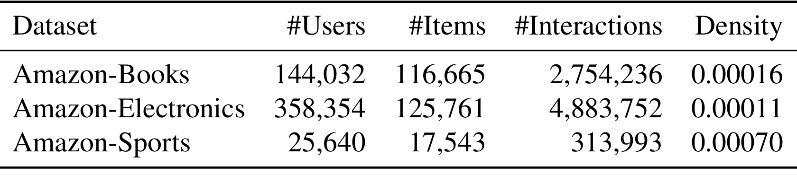
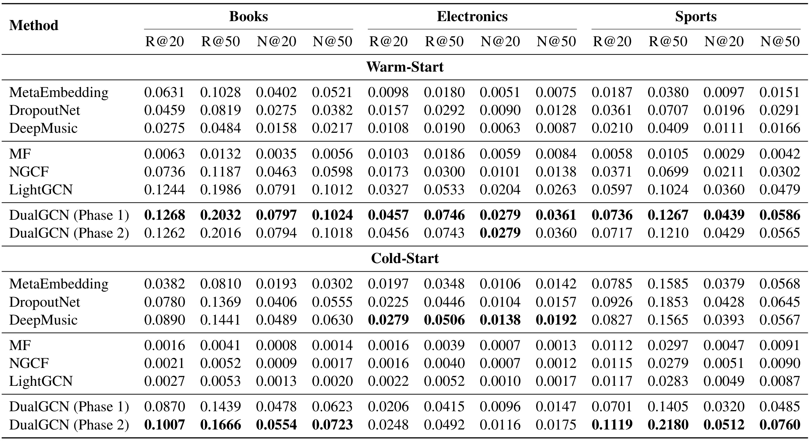
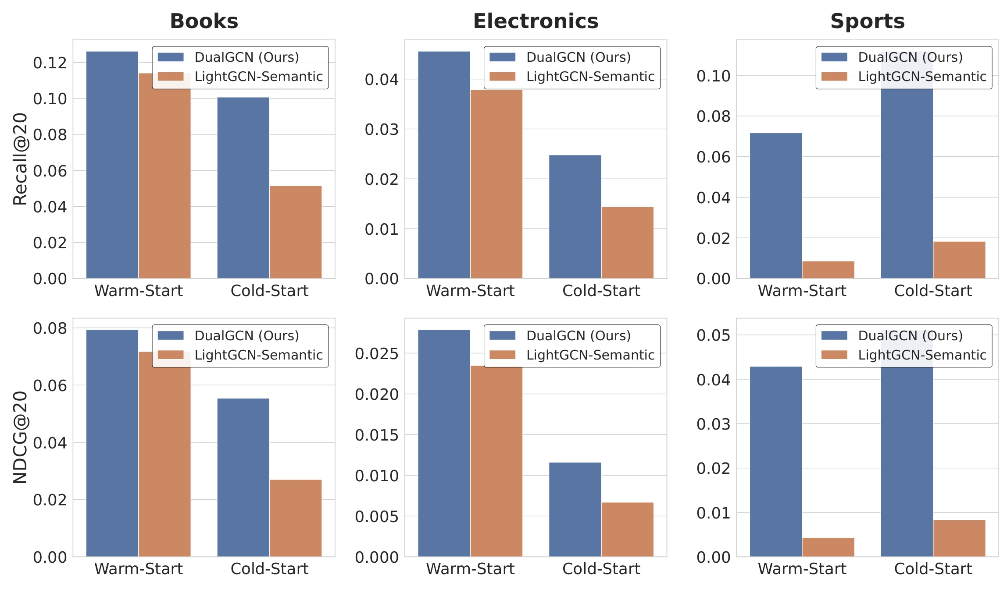
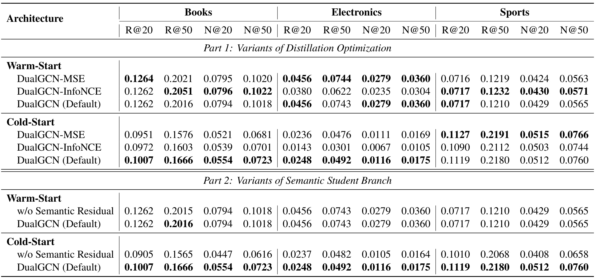

DualGCN：用语义锚与双分支图蒸馏跨越物品冷启动的拓扑断层
论文： Bridging the Topological Divide: Dual-Branch Graph Distillation with Semantic Priors for Robust Cold-Start Recommendation
中文译名： 跨越拓扑鸿沟：以语义先验和双分支图蒸馏实现稳健冷启动推荐
作者与机构： Yuanfeng Qiu，香港科技大学（广州）。
来源与时间： arXiv 预印本，2026-10-14 首次公开；本笔记于 2026-10-16 阅读全文核验。
论文入口： arXiv:2610.19578
代码状态： 本轮未核验到独立代码或项目页；没有运行作者实验。
类别： 推荐算法；冷启动召回、图协同过滤、语义蒸馏。
能否在为冷启动物品利用丰富语义先验的同时，保留基于 ID 模型的轻量架构和协同建模效率？
1. 背景和问题
DualGCN 研究的是召回阶段的一类明确故障：用户仍然具有历史行为，但待推荐物品刚进入系统，训练图中没有它的任何交互。此时图协同过滤依赖的两种基础同时缺失。一个新物品没有经过训练的 ID 向量，不能直接从参数表拿到有意义的表示；它在用户—物品二部图上的度又为零，无法沿交互边获得邻居信息。把它放到更深的图卷积中，并不会凭空产生边，因此增加传播层数不能解决这个问题。论文把这种完全无交互的物品称为严格冷启动物品，它比“只有几次点击的长尾物品”更强，也与冷用户问题不同。
这一问题在使用 LightGCN 类向量召回模型时尤其突出。用户和物品先拥有可训练的底层嵌入，再通过归一化邻接矩阵反复传播；最终表示汇总多个传播层，内积形成偏好分数。对热物品而言，向量反映了真实交互图中的高阶连接。对孤立新物品而言，传播机制无法让它进入已经形成的协同结构。这里的“坍塌”主要指检索质量和表征有效性退化，并不必然意味着所有向量都收缩到数值零点；混用这两种含义会误读论文的动机。
论文第 3 节给出一个直接对照。在 Amazon-Books 上，LightGCN 的热启动 Recall@20 为 0.1244，冷启动变成 0.0027；NDCG@20 从 0.0791 变成 0.0013。NGCF 的对应召回从 0.0736 变成 0.0021。这个量级说明只依赖 ID 和可见交互时，评测中的零交互物品几乎无法得到有效排序。但这些冷热分数来自不同候选池，不能解读成同一组固定候选上做一次掩码后的因果效应，也不能把相对下降直接换算成线上新物品流量损失。
物品语义提供了一个图之外的信息来源。标题和类别在商品上架时通常就存在，可以用预训练语言编码器得到连续向量。论文实验实际使用的是标题与类别拼接后，经 all-mpnet-base-v2 编码的文本表示，再用 PCA 压缩。虽然摘要及部分论述使用多模态措辞，本文没有核验到图像输入及图文消融实验，因此准确归类是文本语义增强的图推荐。基础语言模型在这里是离线特征编码器，不承担生成解释、交互式问答或直接输出推荐列表。
只把语义向量拿来替换随机 ID，确实已经能让冷启动获得非零的相关性信息。Table 1 中，LightGCN-Semantic 的冷启动 Recall@20 为 0.0515，比原版 0.0027 高很多；但热启动 Recall@20 从原版 0.1244 降到 0.1141，冷启动仍明显弱于更强的内容基线。这说明侧信息的存在和侧信息与协同坐标兼容，是两个问题。文本向量主要描述内容近似，协同向量还受受众共现、购买替代和用户群体结构影响；同一类别的两件商品可能服务不同人群，标题相似也不能保证偏好向量重合。
作者因此把难点表述为跨空间映射：只拿一个新物品的语义属性，如何预测它在成熟协同空间里应处的位置。若教师仍是完全由随机 ID 和交互图训练出来的空间，学生就要从局部语义恢复大量依赖全局用户行为的信息。这个映射可能缺乏可预测性；即便网络容量足够，也容易拟合训练物品的特殊位置，不能迁移到真正隔离的新物品。DualGCN 的一个有价值选择，是同时改造被蒸馏的目标空间，让教师先具有稳定的语义参照，再要求学生学习剩余偏移。
另一层难点来自训练目标之间的干扰。若图重构和语义映射同时更新，教师本身会移动，学生追逐的标签也随之改变；稀疏交互产生的梯度还可能改变语义表示原有的邻近结构。论文用分阶段冻结参数避免直接的梯度竞争。这里应区分设计动机与已证明的现象：原文给出初始化和损失消融，支持冻结语义与残差设计有效，但没有展示每一步梯度夹角或优化轨迹的完整统计，不能据此声称所有多任务冲突均被彻底消除。
最后还有召回分数的尺度问题。单位方向相近的两个物品，若范数不同，与同一个用户向量的内积也不同。教师向量的范数可能携带历史频率、优化强度等信息，而零交互物品没有可靠的频率先验。既强迫学生学习范数，又希望它不受到热门物品影响，目标之间存在张力。作者把方向蒸馏与推理范数校准拆开：训练时主要学方向，推理时用热物品平均范数补齐尺度。不过这一设计是否真正改善冷热混合候选的曝光，仍需要独立混排实验，不能从纯冷候选排序结果反推。
因此阅读本文可以带着三个层次的问题。第一，语义锚能否提高教师热启动质量，并让协同目标更易于内容预测？第二，冻结教师之后，残差学生是否确实把这种目标推广到训练中无交互的物品？第三，范数重建和阈值路由在真实冷热共存、数据持续到来的环境中是否稳定？论文对前两个问题提供离线证据，对第三个问题提供机制与公式，但评测范围尚不足以构成完整的线上答案。把这三个层次分开，比只记住一个“冷启动提升”的总标签更能判断它的研究价值。
在已有方法谱系中，DropoutNet 用训练时丢弃协同信息迫使模型适应缺边，MetaEmbedding 学习由侧信息生成初始嵌入，内容映射方法则把文本压入偏好坐标。DualGCN 的差别不在于首次使用文本，而在于明确分工：教师吸收交互与内容，学生仅用内容复现教师方向。它把需要全图的信息压入训练目标，测试时对新物品进行归纳前向。这种分工适合物品更新快、用户已有长期行为的场景，但对完全没有用户画像的新用户，没有相应独立用户编码器，本文不能直接解决。若把冷用户与冷物品一起计入线上评估，必须另做用户侧设计。
还需把语义的可得性与可靠性区分开。标题和类别虽然在上架时存在，却可能简短、重复、含营销词，类别体系也可能跨商家不一致。冻结表示可以减少稀疏梯度破坏原始语义的风险，但无法自动修正输入元数据错误；若错误在文本编码阶段已经形成，固定锚也可能把教师拉向不合适的方向。论文没有开展文本污染、缺失类别或标题截断的稳健性实验，这些都属于将方法迁移到真实商品库之前需要查证的条件。
2. 方法
2.1 以冻结语义锚塑造协同教师
教师的输入是可见热物品交互图、用户 ID 表、物品 ID 表和每个物品的文本语义。预处理先把物品标题与类别合成文本，经冻结编码器和 PCA 得到与协同向量同维的先验，对应原文式（8）：
符号解释：$t_i$ 是物品标题与类别的拼接文本，$\Phi_{\mathrm{enc}}$ 是 all-mpnet-base-v2，$s_i$ 是 PCA 后的 64 维表示，$\bar s_i$ 是其单位方向。编码器原始输出为 768 维。归一化的作用是先去掉内容向量本身的尺度，避免它与随机 ID 嵌入的初始范数差异主导早期优化；它并不保证各类别文本质量或语义密度一致。 教师没有直接丢弃物品 ID，而是加入固定方向、可学习强度的语义锚。原文式（9）的初始化为：
符号解释：$e_i$ 和 $e_u$ 是可训练的物品和用户 ID 向量，$\gamma$ 是全局可学习标量，$e_i^{(0)}$、$e_u^{(0)}$ 是进入图传播的第零层表示。冻结的是语义特征方向，不是整个教师；第一阶段仍更新 ID 表和 $\gamma$。这种加法让语义提供参照，ID 则保留不能由内容解释的个性化协同自由度。 随后教师遵循 LightGCN 的线性传播及多层平均，对应原文式（10）至（14）：
符号解释：$E^{(k)}$ 是第 $k$ 层全节点表示，$\widetilde A=D^{-1/2}AD^{-1/2}$ 为对称归一化二部图邻接矩阵，$D$ 为度矩阵，$K$ 为图传播层数，$E_u$、$E_i$ 为两侧 ID 表，$\bar S$ 为热物品语义方向矩阵，$\widetilde E^T$ 为最终教师表示。该表达式可线性展开成图传播的 ID 项与图平滑的语义项，因而用户即使没有文本，也能沿交互边吸收到物品语义。论文所谓拓扑平滑语义先验，就是后一项在图上的扩散结果。

图中左侧是 LightGCN，右侧是 DualGCN；颜色表示五个类别，浅色点与深色点区分初始与最终表示，星形是静态语义锚。右图把最终样本画成围绕各自锚点更集中的簇，左图没有相同的显式锚点结构。它所表达的机制，是让协同学习沿着带语义参照的方向调整，而不是让学生事后学习一个完全任意旋转和缠绕的 ID 空间。对学生而言，目标中可由内容解释的部分越稳定，残差映射越可能在未见物品上保留意义。但这幅图是低维 UMAP 投影，只能作为几何现象的可视化，不能当作高维距离、类别可分性或检索性能的数学证明。二维点簇分离也不能推出用户偏好只由类别决定；如果真实需求横跨类别，强行提高类别聚集反而可能掩盖个性化。原文没有在图旁完整给出 UMAP 参数、多随机种子投影或抽样置信度，所以不能通过视觉上更整齐就量化蒸馏收益。还应注意静态的是输入语义及其方向，整个图平滑项仍受可学习 $\gamma$ 与图结构影响。把所有教师坐标称作永久冻结先验，会与第一阶段的参数更新相矛盾。图更适合解释“为什么先改教师再做学生”，其效果是否成立仍应回到主结果和消融表判断。
2.2 残差语义学生与解耦蒸馏
学生只接收物品语义，不需要新物品的交互边或已训练 ID。这条路径使用两层映射、LayerNorm 和非线性，再加上同一语义锚，对应式（15）：
符号解释：$W_1,W_2$ 和 $b_1,b_2$ 是学生网络权重与偏置，$\operatorname{LN}$ 为层归一化，$\sigma$ 为非线性激活，$\widetilde e_i^S$ 是学生输出，$\gamma\bar s_i$ 是语义残差。学生要学习的是在已有内容方向上添加协同偏移，而非从零恢复整个坐标。这个结构的归纳偏置很清楚：语义本身应当保有部分预测价值，网络只补足相对于语义先验的差异；它不是保证所有新物品都能恢复真实协同邻居的定理。
两阶段训练把教师坐标形成与学生坐标拟合分开。 第一阶段冻结学生网络，用热物品交互更新用户、物品 ID 和语义注入强度，以 BPR 学习正物品高于负物品的排序，对应原文式（16）：
符号解释：$(u,i,j)$ 表示用户、正交互物品与采样负物品三元组，$\hat y$ 是教师内积分数，$\lambda$ 控制正则，$\Theta$ 为原文描述的第零层可学习参数正则。原文把该正则写作初始嵌入平方范数，但缺少代码时尚不能核验实际实现究竟正则到哪些参数。第二阶段永久冻结第一阶段得到的教师参数以及 $\gamma$，只在热物品上优化学生。教师输出成为固定软标签，原文式（17）采用余弦目标：
符号解释：$I_{\mathrm{warm}}$ 为训练可见热物品集合，上标 $S$ 和 $T$ 区分学生与教师，分母把两者都归一化。该目标让学生拟合方向，主动放弃绝对欧氏坐标中的范数约束。作者认为物品频率影响教师范数，而学生缺少这种频率信息，因此拟合方向更适合零交互泛化。这是有消融支撑的设计理由，不过 Sports 中 MSE 略优于默认目标，说明该选择并非跨数据域严格占优。
2.3 按交互度路由与动态范数重建
余弦训练没有约束学生输出尺度，推理时直接把学生和教师向量放进同一个内积检索库，分数可能受到范数差异影响。因此先估计教师热物品向量的平均范数，原文式（18）为：
符号解释：$\mu_{\mathrm{norm}}$ 是热物品教师表示的平均二范数。公式明确对全体热物品求均值，正文同时使用“每个推理批次计算”的描述；二者可以理解为每批使用或重算同一个全量统计，但原文并未充分澄清是否实际采用批内近似。这里不能擅自把公式改写为当前 batch 内均值，也不能宣称已核验在线维护策略。 最终按交互度和阈值切换路径，原文式（19）及后续打分为：
符号解释：$d_i$ 是物品交互度，$\tau$ 是路由阈值，$e_i^*$ 是检索所用最终物品向量，$\widetilde e_u^T$ 为教师用户向量。热物品沿教师路径，冷或极稀疏物品沿学生方向并恢复统一平均尺度。理论上可以离线生成物品向量后接入向量索引，新物品只需要语义编码和小网络前向；但阈值取值、从冷到热时的向量切换、索引更新和范数漂移都需要工程验证。尤其当候选全是冷物品时，给所有候选乘相同正标量不会改变内积排序，因此纯冷候选的 Recall 和 NDCG 本身不能证明范数重建有效。论文提出的是有合理动机的统一检索接口，尚未充分隔离其冷热混排收益。
3. 实验结果
3.1 三个商品域与“严格冷启动”的具体含义
实验选用 Amazon Reviews’23 的 Books、Electronics 和 Sports。先对用户和物品做 10-core 过滤，保证保留节点在全局原始交互中至少有十条行为。随后随机隔离 10% 物品构成冷启动组，把这组物品的交互从训练中完全遮蔽；其余 90% 热物品的交互按 7:1:2 随机划分训练、验证和测试。这个协议确实在训练可见图上构造了零度物品，但冷物品在过滤前具有足够的历史行为，它模拟的是“把已发生过行为的物品隐藏起来”。它不等价于按上架时间等待真实新品产生反馈，也没有覆盖天然低质量、低曝光、极长尾的新商品分布。

表中 Books 有 144,032 个用户、116,665 个物品和 2,754,236 条交互；Electronics 有 358,354 个用户、125,761 个物品和 4,883,752 条交互；Sports 有 25,640 个用户、17,543 个物品和 313,993 条交互。按用户乘物品矩阵计算的密度分别约为 0.00016、0.00011 和 0.00070。Sports 的总量最小，矩阵密度却最高，不能只看绝对交互数就称它“最稀疏”。这也提醒我们，跨域收益会同时受到用户规模、物品规模、文本信息、类别结构和行为稀疏度影响，不能把一个域的提升全部归因于单一指标。10-core 让图上存在较丰富的协同信号，随后随机隐藏物品可以检验从热物品学习的语义映射，但也缩小了与真实上新分布的距离范围。论文没有报告按上架月份、文本完整度或预训练语义覆盖程度的分层结果，因此表中的规模为理解实验提供背景，不能代替这些分布检查。它同样没有告诉我们业务中的冷物品占多少曝光、能拿到多少训练外的标签或系统如何做冷流量探索。
所有内容基线都使用相同的标题、类别语义，编码为 768 维后压到 64 维，这降低了“一个方法拿到更强文本编码器”的明显不公平。对照方法包括 MF、NGCF、LightGCN，以及 DeepMusic、DropoutNet 和 MetaEmbedding。实际的 DeepMusic 输入在这里也标准化成文本特征，不应因为基线名称就认为实验使用了音乐、音频或其他模态。模型嵌入维度为 64，图传播三层，Xavier 初始化，Adam 学习率 0.012，权重衰减为万分之一，batch 为 262,144。教师训练 600 epoch，学生蒸馏 200 epoch；这些是论文报告设置，并非本轮运行或确认可复现的配置。
评估采用 Recall@20、Recall@50、NDCG@20 和 NDCG@50。热启动用全排序策略，在未观测候选中排序；严格冷启动明确把候选限制在冷物品集合。后一选择让我们看到新物品彼此之间的偏好区分，消除了热门热物品的强竞争，却也绕开了新物品能否进入全库前列的问题。于是一个模型在纯冷候选上得分高，不代表它与全部热物品竞争时拿到更多曝光；冷热指标数值也不适合直接横向比较。原文未充分交代 PCA 拟合是否只使用热物品，这涉及严格归纳评测的特征预处理边界，需要代码或作者进一步说明。
还需记录用户侧的限制：该协议主要评测有历史行为的用户对被隔离物品的排序，用户嵌入仍由热物品交互训练。它没有验证完全新用户，也没有报告按用户历史长度划分的质量。如果某用户的历史偏好集中在被隔离的物品上，训练图可见信息的变化也会影响学生效果；后续复现应检查这类用户是否被过滤、怎样计入平均指标，避免把物品侧冷启动实验误解成对任意用户都成立的零样本推荐。
3.2 主结果：Books 与 Sports 的收益及 Electronics 反例

完整主表把两阶段分别列出来，能把“语义锚训练教师”与“训练学生后的冷物品表示”区分开。Books 热启动第一阶段 Recall@20 为 0.1268，对比 LightGCN 的 0.1244，增幅约 1.9%；第二阶段为 0.1262，仍略高于 LightGCN。冷启动第二阶段 Recall@20 达到 0.1007，高于内容基线 DeepMusic 的 0.0890，约提高 13.1%；NDCG@20 为 0.0554，相比 0.0489 约提高 13.3%。这里的最强冷内容对照和最强热 ID 对照不同，分别比较有助于看清模型在两个目标间的折中，不能只挑极弱的冷启动 LightGCN 作为唯一参照来突出数量级收益。
Sports 的冷启动最强对照是 DropoutNet，其 Recall@20 为 0.0926，DualGCN 第二阶段为 0.1119，约提高 20.8%；NDCG@20 从 0.0428 到 0.0512，约提高 19.6%。第一阶段冷召回为 0.0701，第二阶段升至 0.1119，说明在这一域，学生蒸馏相对于第一阶段冷路径的增益较明显。热启动第一阶段 Recall@20 为 0.0736，高于 LightGCN 的 0.0597；第二阶段回落到 0.0717。Sports 的“对热质量影响较小”与“热质量完全不变”必须区别开，前者可由表中接近但有差异的数值支持，后者不成立。
Electronics 冷启动没有全面领先：DualGCN 第二阶段 Recall@20 为 0.0248，低于 DeepMusic 的 0.0279；Recall@50 为 0.0492，低于 0.0506；NDCG@20 为 0.0116，低于 0.0138；NDCG@50 为 0.0175，低于 0.0192。按同域同指标计算，Recall@20 约低 11.1%，NDCG@20 约低 15.9%。相比第一阶段的 0.0206 和 0.0096，蒸馏确实提高了 Electronics 冷启动，但仍没有超过最强内容基线。因此本文适合概括为“在保留较强热推荐的同时改善冷启动，并在两个域超越现有内容对照”，不能写成“三个数据集的冷启动都最优”。表中的粗体也能直接帮助识别这个边界。
热启动方面，Electronics 的第一阶段 Recall@20 从 LightGCN 的 0.0327 提升到 0.0457，约 39.8%；第二阶段为 0.0456。这个结果说明教师的语义锚和 ID 自由度在这一域兼容得较好，但并不能推出冷映射同样最优。热门商品的协同信息可能含有文本难以推断的行为结构，纯内容学生仍受到信息上限限制。这是对实验模式的一种合理解释，并非作者通过额外实验排除了全部替代原因；要确定失败根因，还应检查语义相似但受众不同的具体商品案例。
第一阶段到第二阶段的热分数有小幅变化，在 Books 的 Recall@20 上从 0.1268 到 0.1262，Sports 从 0.0736 到 0.0717。按照方法描述，教师和对应热路径都被冻结，那么完全相同的教师、路由与评测本应产生一致输出。差异可能涉及稀疏阈值路由、checkpoint、随机评估或实现细节；本轮没有独立代码，无法判断。合理报告方式是指出“表中近似保留但并非逐数相同”，保留方法—实验之间需要核验的一处缝隙，而不是替作者断言严格无损。论文也没有给出多随机种子方差和显著性检验，近似相等的差值不宜过度阐释。
3.3 语义冻结、蒸馏损失与残差分别说明什么

这张六面板图按列区分 Books、Electronics、Sports，按行区分 Recall@20 与 NDCG@20；每个面板再比较热和冷两种场景。蓝柱为 DualGCN，橙柱为 LightGCN-Semantic。直接把初始 ID 换成可训练语义向量的做法，在三域尤其冷启动下明显弱于完整框架，Sports 的热启动差距也很突出。它说明保留固定语义参照、让 ID 负责协同调整，是比任由语义被稀疏交互目标改写更稳健的一条路线。但这个对照同时改变了 ID 自由度、语义冻结和后续蒸馏等因素，不能只凭该图把全部增益归因于“冻结”一个开关。若要隔离因果，还需要保持其余结构不变，分别开关语义冻结、ID 加法和学生训练。图中三个数据域的纵轴刻度不同，跨列比较柱高不能直接判断绝对收益；需要结合各轴读数与主表。同样，面板没有误差条，视觉上的小差距无法证明统计稳定性。对工程复现而言，它更像是初始架构筛选信号：先尝试固定内容方向与可训练协同残差，再决定是否值得引入更复杂融合，而不是宣布所有端到端内容更新都不可取。

表的上半部分比较 MSE、InfoNCE 与默认余弦损失，下半部分移除学生语义残差。Books 冷启动 Recall@20 中，MSE 为 0.0951、InfoNCE 为 0.0972、默认余弦为 0.1007；Electronics 分别为 0.0236、0.0143、0.0248。默认目标在这两个域更好，尤其 Electronics 中 InfoNCE 下降明显，说明引入负样本的排斥并不总适合精确模拟教师坐标。可是 Sports 中 MSE 的 Recall@20 为 0.1127，高于默认 0.1119，NDCG@20 为 0.0515，也高于默认 0.0512；Recall@50 和 NDCG@50 同样略优。原文把余弦描述为综合最优，我们应保留这组数值反例，避免把“跨域选择较稳”改写成“每个域每个指标都最优”。没有方差时，Sports 的微小差异也不能被夸大成 MSE 确定胜出，但足以否定普遍占优的表述。
移除语义残差后，Books 冷 Recall@20 从 0.1007 降到 0.0905，Sports 从 0.1119 降到 0.1010，Electronics 从 0.0248 降到 0.0237；Books NDCG@20 从 0.0554 到 0.0447，Sports 从 0.0512 到 0.0408，下降相对更明显。它提示残差不仅影响命中数量，也有助于把相关物品放得更靠前。热分数基本一致，与教师路径的分离设计相符。不过消融展示的是某一套固定训练预算下的效果，不能断言无残差 MLP 在充分调参、不同层数或不同文本编码器下必然差。默认模型在 Sports 相比 MSE 略弱，也提示方向学习与范数信息的作用会随域改变，后续应把“范数等于无用流行度”的强假设作为实验对象。
残差消融更接近局部结构验证，因为它保留教师与主要训练目标，只改变学生的直接语义通道。但这也意味着它不能说明教师的语义先验强度该如何选。全局标量可能对长尾和热门品类、短标题和长标题不具有相同最优值；按域或按置信度调节强度是后续假设，当前表格尚未检验。相似地，实验没有改变编码器或 PCA 维度，不能判断收益来自特定文本几何，还是对更强语义模型仍可保持。要评估稳健性，应让基线和方法共享每套新特征，避免只升级 DualGCN 输入。
3.4 成本、理论与证据缺口
论文复杂度分析把图传播每 epoch 时间写作与传播层数、交互边数和嵌入维度的乘积同阶，空间由节点嵌入与稀疏图主导。这说明教师保留了 LightGCN 的线性稀疏传播结构，但不能据此宣称总成本与原版相同：还存在 600 加 200 epoch 的训练计划、文本预处理、学生映射和索引更新。本文没有展示实测训练时长、GPU 型号、吞吐、内存峰值、向量生成耗时或线上请求延迟，也没有复杂度之外的效率图。对于模型服务，需要分别测量新物品文本编码、学生前向、索引写入、召回扫描及热用户表示更新，才能判断真正瓶颈。
原文第 4.4 节的“理论有效性”主要是结构分解与几何解释，配合 UMAP 说明语义锚约束的直觉，没有给出冷物品排名泛化误差界、可识别性证明或分布外保证。当内容相同而受众不同、文本不足或品类迁移时，学生从语义单独恢复协同坐标存在固有歧义。因而这里应把理论部分理解为方法合理性分析。尤其范数重建没有单独消融，也未在全量冷热候选混排中验证；共同乘一个正范数不改变纯冷集合内部排序，这一数学事实进一步限定了现有指标能支持的结论范围。
4. 总结
DualGCN 最值得保留的思想，是先让教师空间具备可迁移的语义参照，再学习内容到协同的残差映射。固定标题和类别表示提供方向，ID 表学习协同行为差异，图平滑让语义沿交互传播；冻结教师后的余弦蒸馏减少移动目标与幅值拟合的负担。其证据支持 Books 与 Sports 的纯冷候选推荐改善，以及三个域上较强的热推荐能力，同时明确保留 Electronics 冷启动弱于 DeepMusic、Sports 的 MSE 略优于默认目标等例外。
对推荐召回，可以迁移的第一点是把新物品入库路径做成独立的归纳编码器，让用户仍留在成熟协同坐标中，避免新物品必须先产生边才可召回。第二点是把语义编码与协同自由度相加，让内容提供稳定方向而不必承担所有行为信号；对于内容噪声大、流行度漂移快的业务，应分别检查方向与范数。第三点是训练阶段冻结模块有利于定位收益来源，但上线后冷到热的路由切换仍需连续性评测，不能仅依赖冻结教师就认为新旧向量天然兼容。
对大模型应用，这种设计启发的是个性化检索与记忆映射，而不是直接提升通用语言推理。可把冻结文本编码器产生的内容语义映射到用户行为塑造的检索空间，在离线阶段蒸馏较贵的偏好结构，再通过小网络为新内容补向量。在个性化 RAG 中，内容相关与用户偏好同样是不同坐标，残差映射可能比直接用语义相似度更合适。但这是迁移设想，论文没有 Agent、RAG、长上下文或语言模型后训练实验，不能将商品召回收益直接当成这些任务的结果。
需要保留四项限制。其一，10-core 后随机隔离物品模拟了训练不可见性，没有覆盖真实按时间到来的新品与极端长尾。其二，冷候选池排除了热物品竞争，范数校准的混排价值尚未被检验。其三，教师冻结描述与 Phase 2 热分数微变、全热均值公式与每批计算描述，需要代码澄清。其四，缺少独立代码核验、随机种子方差、显著性、硬件成本和线上效果，不能据此承诺稳定收益。
实践时还应把教师更新周期纳入风险判断。新交互进入后，教师图和用户向量会变化，旧学生拟合的是上一版空间，二者不同步可能造成冷物品表示过期。本文的两阶段静态实验没有回答增量刷新频率，也没有验证跨版本向量兼容。可以把教师版本、学生版本和语义预处理版本一起绑定，并在实验中测量延迟刷新下的质量退化；这是工程推演，不是论文已实现的机制。
后续可沿三条路径推进。先复现同一数据协议，核对 PCA 拟合范围、冷物品是否进入图或统计量、路由阈值及教师冻结前后向量哈希，优先排除实现与评估泄漏。再增加按上架时间切分、全量冷热混排和分曝光层统计，分别关闭范数重建与残差，观察冷召回、热召回、曝光占比和总体相关性之间的变化。最后聚焦 Electronics 失败案例，分析标题类别相似但受众差异大的商品，并比较不同文本编码器、分类范数与适应性阈值；这些实验能判断瓶颈在语义信息上限、教师目标难度还是尺度校准，而不是继续用更深映射网络盲目加容量。